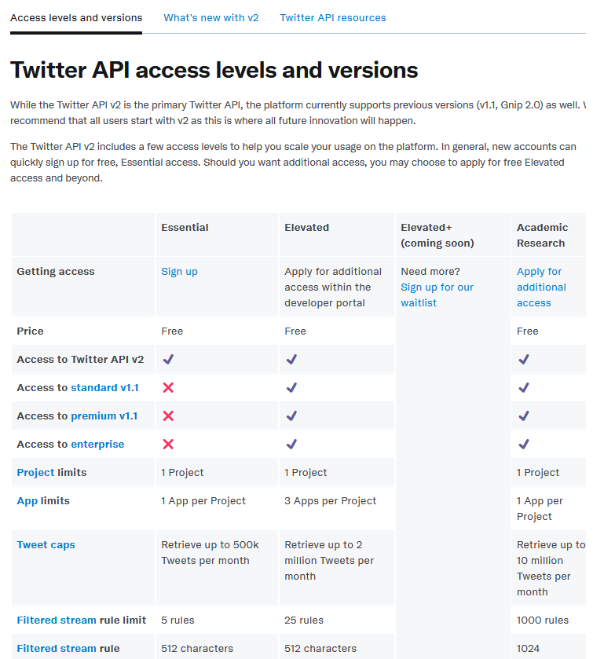
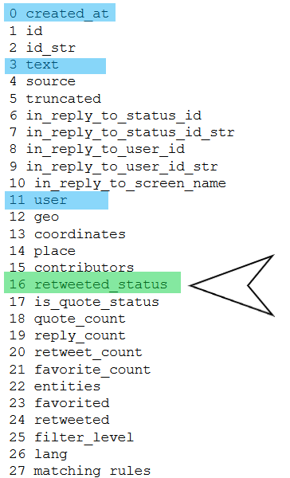

import os
os.environ["BEARER_TOKEN"]=" insert here "
os.environ["API_key"]='insert here'
os.environ["API_secret"]=' insert here'
os.environ["access_token"] = " insert here "
os.environ["access_token_secret"]=" insert here "
Tweepy
Searching tweets using tweepy
- toc: true
- badges: true
- comments: true
- categories: [twitter, tweepy, Python]

Resources
A. Getting started with twitter API - Twitter Developer Platform
https://developer.twitter.com/en/docs/twitter-api/getting-started/about-twitter-api
B. Tweepy Documentation
https://docs.tweepy.org/en/stable/index.html
C. A comprehensive guide for using the Twitter API v2 with Tweepy in Python - Suhem Parack
https://dev.to/twitterdev/a-comprehensive-guide-for-using-the-twitter-api-v2-using-tweepy-in-python-15d9
D. Making queries to Twitter API on tweepy - Roberto Aguilar
https://medium.com/@robguilarr/making-queries-to-twitter-api-on-tweepy-66afeb7184a4
E. Accessing the Twitter API with Python - Mihajlo Pavloski
https://stackabuse.com/accessing-the-twitter-api-with-python/
F. How to Apply for a Twitter Developer Account - jean-christophe-chouinard
https://www.jcchouinard.com/apply-for-a-twitter-developer-account/
G. How to get Twitter API Credentials (API Keys) - jean-christophe-chouinard
https://www.jcchouinard.com/twitter-api-credentials/
H. Twitter API with Python (Complete Guide) - jean-christophe-chouinard
https://www.jcchouinard.com/twitter-api/
Setting up twitter API
1. Apply for a developer account
Before using the Twitter API, you first need a Twitter account, and to have obtained some credentials. The process of getting credentials could change with time, but currently it is as follows:
Visit the Application Management page at https://apps.twitter.com/, and sign in with your Twitter account
Click on the "Create New App" button, fill in the details and agree the Terms of Service
Navigate to "Keys and Access Tokens" section and take a note of your Consumer Key and Secret
In the same section click on "Create my access token" button
Take note of your Access Token and Access Token Secret
And that's all. The consumer key/secret is used to authenticate the app that is using the Twitter API, while the access token/secret authenticates the user. All of these parameters should be treated as passwords, and should not be included in your code in plain text. One suitable way is to store them in a JSON file "twitter_credentials.json" and load these values from your code when needed.Source E. Accessing the Twitter API with Python - Mihajlo Pavloski
Twitter API access levels and versions
While the Twitter API v2 is the primary Twitter API, the platform currently supports previous versions (v1.1, Gnip 2.0) as well. We recommend that all users start with v2 as this is where all future innovation will happen.
The Twitter API v2 includes a few access levels to help you scale your usage on the platform. In general, new accounts can quickly sign up for free, Essential access. Should you want additional access, you may choose to apply for free Elevated access and beyond. Source A. Getting started with twitter API - Twitter Developer Platform

I applied for elevated access. This involved filling in several questions about what I would user twitter API for and a follow up email.
For more info on how to apply for a twitter development account see F. How to Apply for a Twitter Developer Account - jean-christophe-chouinard
2. Create a project/app
To use the twitter API you need to create a twitter App. From this you can then get the security IDs, bearer_token, API_key etc.
For more details on this see G. How to get Twitter API Credentials (API Keys) - jean-christophe-chouinard
3. Set up an environment
Twitter API bestows us several endpoints at the moment we request our App access. From which 3 of them are for searching methods, those that bring samples of the tweets we want according to specific criteria.
api.search_30_day()
Premium Search for tweets from the last 30 days.
Monthly limitation of 4500 tweets per minute, without exceeding 25K tweets per month — Sandbox
api.search_full_archive()
Premium Search for tweets from March of 2006.
Monthly limitation of 3000 tweets per minute, without exceeding 5K tweets per month — Sandbox
api.search_tweets()
Regular Search for tweets from the last 6–9 days as maximum.
Monthly limitation of 3000 tweets per minute — Sandbox, this is the one that we gonna use in this case.From D. Making queries to Twitter API on tweepy - Roberto Aguilar
These environments are found at https://developer.twitter.com/en/account/environments.
And the name of the environment is included in the particular search (as shown below label=XXX.
4. Install tweepy
pip install tweepy
Tweepy code
Import and check it is authenticated
import tweepy
# API keys that yous saved earlier
api_key = os.environ.get("API_KEY")
api_secrets = os.environ.get("API_secret")
access_token = os.environ.get("access_token")
access_secret = os.environ.get("access_token_secret")
# Authenticate to Twitter
auth = tweepy.OAuthHandler(api_key,api_secrets)
auth.set_access_token(access_token,access_secret)
api = tweepy.API(auth)
try:
api.verify_credentials()
print('Successful Authentication')
except:
print('Failed authentication')Search tweets
Two main ones:
For last 30 days:
outa = api.search_30_day(label, query, *, tag, fromDate, toDate, maxResults,next)
And for any times:
outa = api.search_full_archive(label, query, *, tag, fromDate, toDate, maxResults, next)
Query
from the python script:
The equivalent of one premium rule/filter, with up to 1,024 characters (256 with Sandbox dev environments).
This parameter should include ALL portions of the rule/filter,including all operators, and portions of the rule should not be separated into other parameters of the query.Following adapted from D. Making queries to Twitter API on tweepy - Roberto Aguilar
- Search for a term
query = 'holiday' - Containing two words
query = 'holiday jet2' - Containing exact words
query='"jet2 braces" "holiday"' - Contain one word OR another
query='jet2 OR "tuiuk"' - Hashtags and mentions
query = '@jet2tweets #holiday' - Exclude words
query='@jet2tweets -travel' - Who the tweet is sent from and to
query='holiday from:jet2tweets'
query='holiday to:jet2tweets'
Dates
Dates are in the format YYYYMMDDHHmm
So 0:00 21st March 2021 = ‘202103210000’
#hide #### Tag
from script:
Tags can be used to segregate rules and their matching data into
different logical groups. If a rule tag is provided, the rule tag
is included in the 'matching_rules' attribute.
It is recommended to assign rule-specific UUIDs to rule tags and
maintain desired mappings on the client side.Following adapted from D. Making queries to Twitter API on tweepy - Roberto Aguilar
- Retweets
tag='-filter:retweets' without retweets
tag='filter:retweets' and just RTs
- Has links
tag='-filter:links'
- Has media
tag='-filter:media'
- Trusted
tag='-filter:trusted'
More filters can be seen in the Docs
The results file
outa=api.search_full_archive(label=label, query=query,toDate=end_time,fromDate=start_time)
The information from outa is accessed for each element using _json, i.e.
outa[0]._json gives the first search result
xx=outa[0]._json
for ii,x in enumerate(xx):
print(ii,x)
If the tweet is longer than 140 char the text property doesn’t display all the text of the tweet.
This will normally then be in the extended_tweet property but also sometimes in the retweeted_status property.
So to get around this put in exceptions.
textAll=[]
for numa in range(0,10):
xx=outa1[numa]._json
try:
textAll.append(numa,'1', xx['created_at'],
xx['retweeted_status']['extended_tweet']['full_text'] )
except:
try:
textAll.append(numa,'2',xx['created_at'],
xx['extended_tweet']['full_text'])
except:
textAll.append(numa,'3',xx['created_at'],xx['text'])